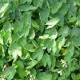
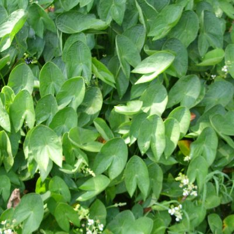
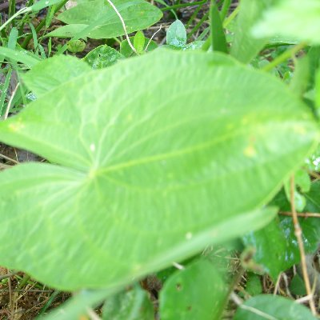

Wapato, Duck potato
Sagittaria spp.
late fall, early spring
Arrowhead leaf, radiating vein pattern.
Edible tubers.
Young leaves edible raw.
Not to be confused with toxic Arrow arum (
Peltranda spp.
) with pinnate veins.


